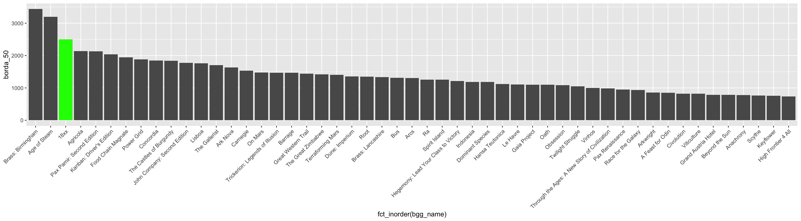
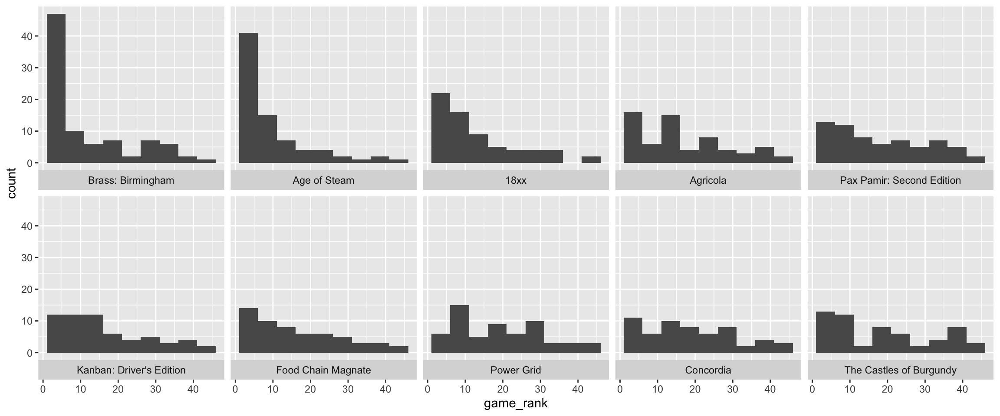

Looking at rankings data for 18xx games
source("hc.R")In the Heavy Cardboard rankings, each ranking was an individual game, as defined by BGG. While some consolidation was done for things like Castles of Burgundy and Castles of Burgundy Special Edition, we kept it to very obvious “same game” cases. This made a big difference to 18xx. No 18xx made the top fifty, because the votes were split across many games.
list_18xx <- games |>
filter(str_detect(families, "Series: 18xx"))
rankings_18xx <- herd_rankings |>
semi_join(list_18xx, by = 'bgg_id')
top_18xx <- herd_ranked_games |>
semi_join(list_18xx, by = 'bgg_id') |>
left_join(games, by = 'bgg_id') This is the top ten 18xx games on the list. (We decided what was 18xx by using the family on BGG.)
top_18xx |>
slice_head(n=10) |>
select(bgg_name, borda_50, herd_rank) |>
knitr::kable(col.names = c("name", "borda 50 score", "herd rank"))| name | borda 50 score | herd rank |
|---|---|---|
| 1862: Railway Mania in the Eastern Counties | 715 | 51 |
| 1846: The Race for the Midwest | 586 | 68 |
| Shikoku 1889 | 467 | 85 |
| 1817 | 407 | 99 |
| 1849: The Game of Sicilian Railways | 330 | 124 |
| 1822: The Railways of Great Britain | 328 | 125 |
| 18Chesapeake | 312 | 129 |
| Railways of the Lost Atlas | 276 | 146 |
| 1830: Railways & Robber Barons | 229 | 171 |
| 1822MX | 151 | 250 |
The natural question is what would have happened if there was a single choice for 18xx. A way we can approximate this is to create a synthetic 18xx game with the highest rating of anyone who rated an 18xx game.
games_plus_18xx <- bind_rows(games, tibble(bgg_id = "f-19", bgg_name = "18xx"))
game_18xx_rankings <- rankings_18xx |>
group_by(identifier) |>
arrange(game_rank) |>
slice_head(n=1) |>
ungroup() |>
mutate(bgg_id = "f-19")
rankings_plus_18xx <- bind_rows(herd_rankings, game_18xx_rankings)
ranked_games_plus_18xx <- rankings_plus_18xx |>
group_by(bgg_id) |>
summarize(borda_50 = sum(points), nb_50 = borda_50 / n_herd_voters) |>
arrange(desc(borda_50)) |>
mutate(herd_rank = min_rank(desc(borda_50)))
top_50_plus_18xx <- ranked_games_plus_18xx |>
filter(herd_rank <= 51) |>
left_join(games_plus_18xx, by = 'bgg_id')
top_50_rankings_plus_18xx <- rankings_plus_18xx |>
inner_join(top_50_plus_18xx, by = 'bgg_id') |>
left_join(games_plus_18xx, by="bgg_id") |>
arrange(herd_rank)Given that, 18xx ends up 3rd on the list.
top_50_plus_18xx |>
ggplot(aes(fct_inorder(bgg_name), borda_50)) +
geom_col() +
theme(axis.text.x = element_text(angle = 45, hjust = 1,vjust = 1)) +
geom_col(data = top_50_plus_18xx |> filter(bgg_id == "f-19"), fill = 'green')
It has a decent score above most other games, although still well-short of the top two.
We can also compare its distribution, using the histogram. I’ll just show the top ten.
top_50_rankings_plus_18xx |>
filter(herd_rank <= 10) |>
ggplot(aes(game_rank)) +
geom_histogram(breaks = seq(1,50,by= 5)) +
facet_wrap(~fct_inorder(bgg_name), ncol=5, strip.position = "bottom")
And the strip chart
top_50_rankings_plus_18xx |>
filter(herd_rank <= 10) |>
arrange(desc(herd_rank)) |>
ggplot(aes(game_rank, fct_inorder(bgg_name))) +
geom_jitter(height=0.2, width=0, size = 2, shape = 1) +
scale_x_reverse(limits = c(51,1), breaks = c(1, 5, 10, 15, 20, 25, 30, 35, 40, 45, 50), minor_breaks=NULL) +
labs(y=NULL)